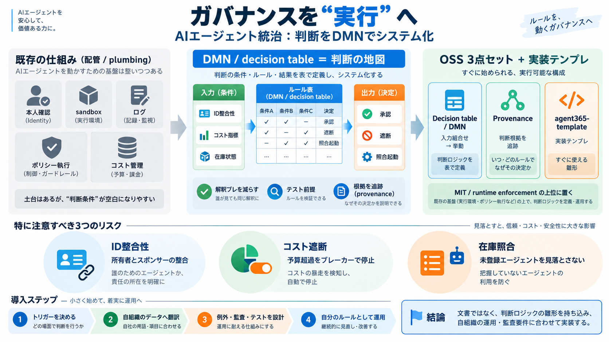

ServiceNow expands AI agent governance through deeper integration with Microsoft
© 2026 ServiceNow, Inc. All rights reserved. ServiceNow, the ServiceNow logo, Now, and other ServiceNow marks are tradem…

| 入力（条件） | ロジック（表） | 出力（決定） |
|---|---|---|
| ID整合性、コスト指標、在庫の有無… | トリガー＋判定＋根拠（provenance） | 承認／遮断／照合サイクル起動 |
| レイヤ | 役割 |
|---|---|
| Runtime enforcement（執行） | ポリシーや安全機構を実行して事故を防ぐ |
| Governance decision（判断） | いつ/何を/どの根拠で承認・遮断・照合するかを決める |
© 2026 ServiceNow, Inc. All rights reserved. ServiceNow, the ServiceNow logo, Now, and other ServiceNow marks are tradem…
An Agent 365 policy template is a collection of predefined governance and security policies that you apply to agents to …
models. The guideline takes effect May 1, 2027, giving insurers roughly a year and a half to build enterprise-wide model…
Agent 365 acts as a centralized control layer for AI agents operating within Microsoft and third-party ecosystems, inclu…
Title: ServiceNow expands AI governance into Microsoft Agent 365 | NOW Stock News 4. ServiceNow expands AI agent governa…